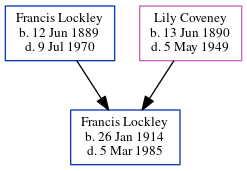

Peter Charles Lockley 1953 - c1977
[ Home ] | [ Calendar ] | [ Surnames Index ] | [ Errors ] | [ Family History ]The child of Douglas Lockley (a police asst supt) and Violet Shrubsole, Peter Lockley, the fourth cousin on the father's side of Nigel Horne, was born in Folkestone, Kent, England on 8 May 19531,2.In 1960 he travelled from Liverpool, Merseyside, England to Lagos, Nigeria, departing on 13 Oct, arriving later that same year.
He died c. Nov 1977 in Dyfed, Wales2.
Parents
- Douglas Charles was born on 22 Feb 1920
- Violet Ivy Lily was born on 7 Mar 1925
Citations
- England & Wales births 1837-2006 - Findmypast
- England & Wales deaths 1837-2007 - Findmypast
Media
Accra Passenger List

England & Wales births 1837-2006 - BMD/B/1953/2/AZ/000854/047
England & Wales deaths 1837-2007 - BMD/D/1977/4/AZ/000675/093
Family Tree
Map
Generated by ged2site. Last updated on Jul 3, 2024